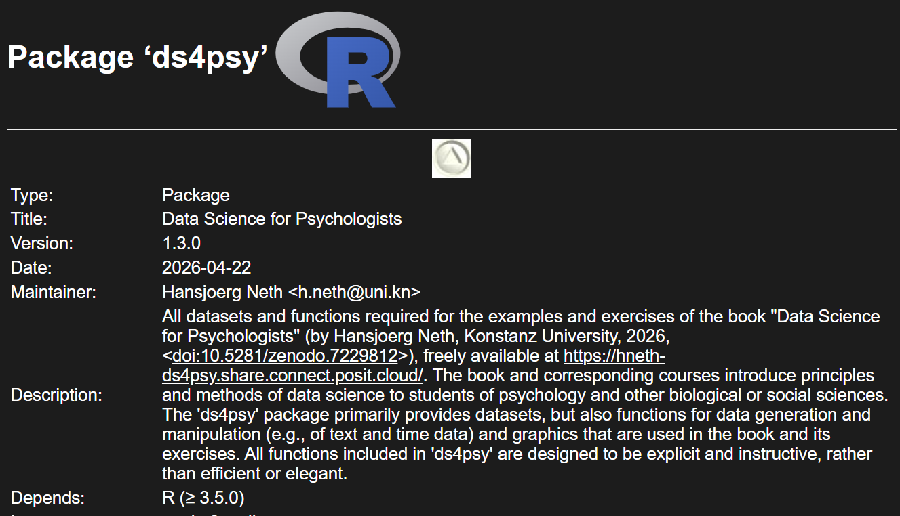
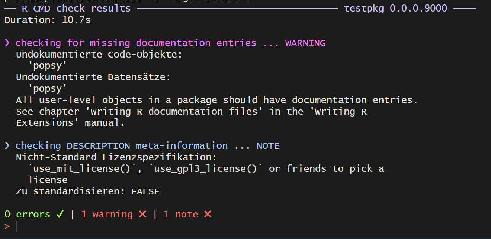
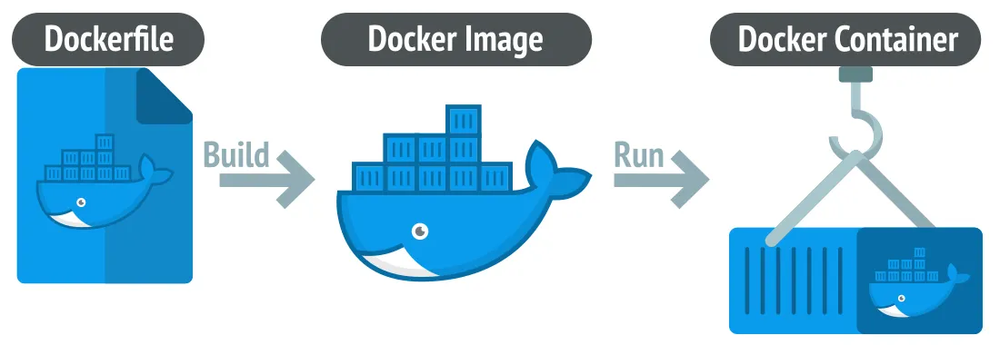

quarto checkPart 2
Literate programming is a methodology that combines a programming language with a documentation language, thereby making programs more robust, more portable, more easily maintained, and arguably more fun to write than programs that are written only in a high-level language. The main idea is to treat a program as a piece of literature, addressed to human beings rather than to a computer.
Donald E. Knuth, https://www-cs-faculty.stanford.edu/~knuth/lp.html
RMarkdown is a combination of the programming language and the documentation language . It allows users to combine R code with markdown-formatted text.
Rmarkdown documents are fully reproducible as the R code contained within is executed when the document is rendered.
Quarto is the successor of Rmarkdown which allows users to include code from multiple programming languages and to render to more output formats.
Quarto is included in recent versions of RStudio. To check whether it is installed and works, you can run in the terminal:
File New file Quarto Document…
A Quarto document consists of:
a YAML header
Markdown text
Code chunks
---
title: "Quarto Example Document"
format: html
---
## Markdown formatting
This is markdown formatted text.
It can contain markdown specific format instructions such as **
for bold text.
## Code chunks
````{r}
#| label: plot
#| fig-cap: CESD total across measurement occasions
#| echo: true
boxplot(popsy$cesdTotal ~ popsy$occasion, horizontal = TRUE)
````The text at the top between — is called the YAML header. It gives instructions, such as the output format, to Quarto when rendering the document.
A simple example:
A more elaborate version that is used to create this presentation.
Typical features are:
a title
an author
format specific options
---
title: "Clean Code, Reproducible Science: Advanced R-Programming and Workflows"
subtitle: "Part 2"
author: "Johannes Feldhege"
format:
revealjs:
theme: [simple]
footer: <PPF Methods Peer Group>
slide-number: true
chalkboard: true
code-link: true
code-line-numbers: false
incremental: true
from: markdown+emoji
engine: knitr
webr:
packages: ['ds4psy', 'dplyr']
filters:
- webr
---Rmarkdown documents are fully reproducible as the R code contained within is executed when the document is rendered.
Quarto documents are rendered in a process that is separate to your RStudio environment, therefore they cannot access currently loaded packages or your carefully created datasets.
That means that you need to load them inside a Quarto code chunk!
To turn a Quarto document into the desired output format, it needs to be rendered.
Quarto documents can be rendered to dozens of different output formats:
HTML pages
Word documents
PDFs
Websites
Books
and more…
I have created an example Quarto document that you can download here
Collaboration with others, who are interested in both your conclusions, and how you reached them (i.e. the code).
As a modern-day lab notebook that contains
Quarto 1.4 introduced an output format for scientific writing: Quarto manuscripts.
It is published as a website that can link to other formats such as word or pdf.
In the background, multiple Quarto files can be used to write the manuscript and conduct the analysis.
A live example can be seen here
usethis packageOne easy step to get started:
usethis::create_package("/path/to/the/package/name")A package name can only contain letters, numbers, and .
.
├── (.gitignore) # Files to ignore when using git
│
├── .Rbuildignore # Files to ignore when building package
│
├── R/ # Folder to store (only) R functions
│ ├── myfun-1.R # A first R function file
│ └── myfun-2.R # A second R function file
│
├── man/ # Folder to store R functions documentation
│ ├── my_fun_1.Rd
│ └── my_fun_2.Rd
│
├── DESCRIPTION # Package metadata
│
└── NAMESPACE # Automatically edited
The description can be edited by hand, but usethis also provides function to edit them:
| Task | function |
|---|---|
| Declare dependencies | usethis::use_package() |
| Adding authors | usethis::use_author() |
| Edit DESCRIPTION | usethis::use_description() |
I have prepared a small script with these functions that you can download here script_package_01.R
I want you to execute these functions to create a package and write metadata to its DESCRIPTION.
Check out the directory structure and the different files that have been created.
| Task | function |
|---|---|
| Create R script | usethis::use_r() |
| Add data | usethis::use_data() |
| Document function | devtools::document() |
| Load all functions | devtools::load_all() |
| CMD Check | devtools::check() |
| Build package locally | devtools::build() |
roxygen2
The idea behind roxygen2 is to document functions with special comments next to their definition. roxygen2 will process these comments and turn them into manual pages in the package.
You can add a comment skeleton with control + alt + shift + R when your cursor is inside the function.
roxygen2 comments#' The length of a string
#'
#' Technically this returns the number of "code points", in a string. One
#' code point usually corresponds to one character, but not always. For example,
#' an u with a umlaut might be represented as a single character or as the
#' combination a u and an umlaut.
#'
#' @param string A text string
#' @return A numeric vector giving number of characters (code points) in each
#' element of the character vector. Missing string have missing length.
#' @seealso [stringi::stri_length()] which this function wraps.
#' @export
#' @examples
#' str_length(letters)
#' str_length(NA)
#' str_length(factor("abc"))
str_length <- function(string) {
}R CMD check runs checks intended for publication on CRAN.
It is very strict.
The three levels of feedback:
errors need to be fixed
warnings affect functionality
notes can often be ignored if you do not intend to publish the package on CRAN

I have prepared a small script with these functions that you can download here script_package_02.R
I want you to
Optional:
ds4psy::posPsy_long() to the package using usethis::use_data()
If the package is not intended for CRAN submission, superfluous information and files are created:
More info here
Two common scenarios:
Paper_260510_final_final.doc: files are sent via e-mail and multiple versions exist out there.
An online document (Google docs, Microsoft 365, etc.): anyone can edit, anyone can see and track changes. Changes can be reverted back.
Version control is more like the second scenario.
Git manages a repository, a collection of files, and their changes over time. In the world this corresponds to a RStudio project or a folder with scripts and datasets.
When you make a change, you commit it with a short message detailing your changes. All these commits make up the history of the repository, through which you can trace back the evolution of your project.
When your version controlled project is not contained to your computer, hosting services such as Github or Gitlab come into play. You can:
Github and Gitlab let you host webpages and websites created in a repository in their service for free.
This can be used to publish Quarto documents, books, websites.
I use this for my own website, for documentation for my R package, and for this workshop!
With containerization, you can control all of the aspects of the computational environment mentioned earlier:
A container is little bit like a virtual machine as it is a separate computer running on another computer. However, it usually does not have a graphical interface, but is run through a terminal.
The container is the running instance of the computer. How this computer is set up is defined by the image.
The specifications for an image can be defined through a text file, e.g. a Docker file:

The image can be shared with collaborators so that they can reproduce the same conditions on a container on their computer.
There are a number of standard images for R created by the Rocker Project. These can be used as a base image which can then be further customised for a specific project.
Books:
Other implementations:
A research compendium collects all digital parts of a research project, including data, code, and texts (protocols, reports, questionnaires, metadata).
https://epiverse-trace.github.io/research-compendium/instructor/compendium.html
When published, a research compendium allows others to reconstruct your analysis and ideally execute it as well.
The idea of a research compendium combines a number of the previously discussed features:
There are a number of R packages that implement research compendia:
Further information: